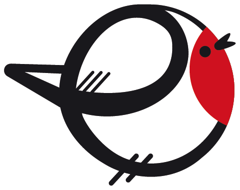
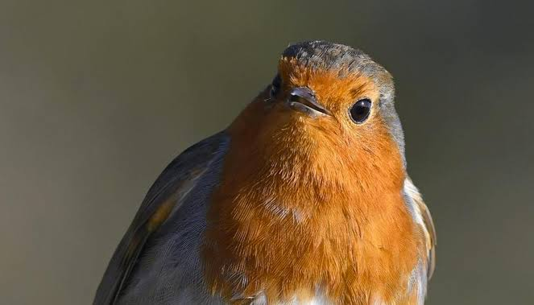

FAU-028 · Fauna · Bird · Muscicapidae
European Robin
Erithacus rubecula (Linnaeus, 1758)
The beloved songbird of the Basque landscape, symbol of Euskara and guardian of the woodlands.

Global population estimated at 130–201 million individuals, with an increasing trend. The oldest ringed robin in the BTO record lived for more than eight years.
Taxonomy and identification
- Kingdom
- Animalia
- Phylum
- Chordata
- Class
- Aves
- Order
- Passeriformes
- Family
- Muscicapidae
- Genus
- Erithacus
- Species
- Erithacus rubecula
Adults of both sexes have a similar orange-red face and breast with a grey border. Juveniles are freckled brown and gold and do not yet show the adult orange breast.
Diet and feeding
The robin feeds mainly on ground-dwelling invertebrates, including insects, beetles, spiders and earthworms. It also takes berries, small fruits, seeds, and even small vertebrates when available.
Habitat and distribution
It uses forests, woodland edges, hedgerows, scrub, parks and gardens. Widespread across all regions in Biscay: Gran Bilbao, Duranguesado, Uribe, Lea-Artibai, Enkarterri, and Busturialdea.
Breeding and life cycle
- Typical clutch: 4–7 eggs (white with red-brown freckles).
- Incubation lasts approximately 12–14 days, performed exclusively by the female.
- Chicks usually fledge 13–15 days after hatching.
- The species can raise 2–3 broods in a favourable breeding season.
Behaviour and interesting facts
- Robins are intensely territorial and may defend feeding areas year-round, sometimes leading to fatal territorial disputes.
- They sing almost year-round with sweet, fluting phrases, pausing only during moulting in July and August.
- They frequently approach gardeners because disturbed soil exposes worms and larvae.
- They can mistakenly attack their own mirror reflection or orange-colored models.
Cultural Significance in the Basque Country
The Name: Txantxangorri
The Basque name txantxangorri combines txantxan (song/chattering) and gorri (red), translating literally to 'red singer'. It is one of the most endearing words in Euskara.
The Legend and Symbol of Euskara
According to tradition, the robin gained its red breast trying to remove thorns from Christ's crown. In 2016, it was chosen as 'Euskararen Txantxangorria', a mascot inviting citizens to embrace the Basque language.

Scientific references
FAU-028 · European Robin
Sightings gallery
Local robin photographs supplied with this project.


